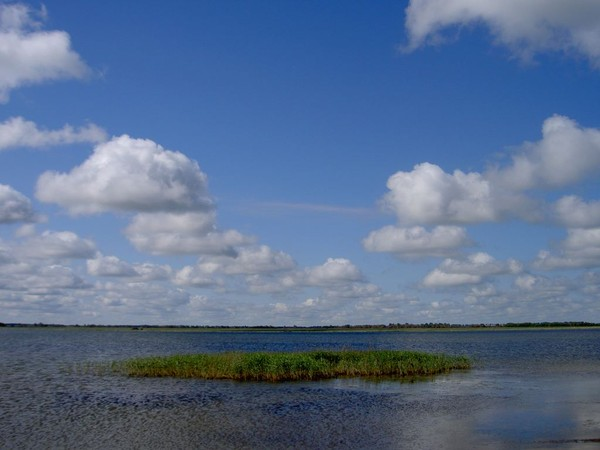

Озёра Омской области


Озеро Салтаим
Расстояние от центра Омска - 207 км
Время в пути - 3 часа
Лучшее время для отдыха - лето
Особенности - бесплатная рыбалка, хороший улов, удобное месторасположение, разнообразие флоры и фауны
Озеро Салтаим — пресный водоем в Крутинском районе, куда стоит приехать ради хорошего улова и размеренного созерцательного отдыха. Водоем окружен озерами меньшего размера, с которыми «поддерживает связь» речками и ручьями. аиболее крупные члены озерной системы — озера Тенис, Ик, Ачыкуль, Горькое, Калыкуль, Синкуль, Камышное и Кошара. С ближайшим соседом — озером Тенис — соединяется Балашовским проливом. Из-за большой ширины протоки (2 км) Салтаим и Тенис воспринимаются на карте как единое водное пятно.
По форме береговой линии озеро Салтаим напоминает большой гриб: широкая «шляпка» находится с северной стороны, а относительно узкая «ножка» — с южной. Площадь поверхности водоема составляет 146 км², длина — 18,5 км, а ширина — 16,5 км. Берега пологие и во многих местах заболочены. Средняя глубина у озера небольшая — всего 2,3 м. В ямах расстояние от водной поверхности до дна достигает 3,5–4 м.
Вода Салтаима была горьковато-соленой, а дно — иловатым. На данный момент уровень минерализации снизился от 1300 до 500–700 мг/л, за счет чего исчезла горечь, а привкус стал более пресным. Дно с годами практически не изменилось — оно, как и раньше, покрыто толстым слоем ила. Из-за большого количества минеральных и органических отложений уровень прозрачности воды составляет летом не более 15 см, а зимой — 70–90 см.
Озеро Салтаим богато рыбой. Многие виды добываются «Крутинским рыбзаводом» в п ромышленных масштабах, но даже при таких условиях любители редко остаются без улова. Владелец водоема не запрещает спортивную рыбалку и не взимает за нее плату. Любой желающий может подойти или подъехать к берегу, спустить на воду лодку либо сесть на рыбацком месте и закинуть удочку или спиннинг с разрешенными снастями.
Рыбаки с Омской области и других регионов приезжают на озеро Салтаим круглый год. С мая и вплоть до ноябрьского ледостава здесь ловится карп, плотва, окунь, щука, судак, лещ, сазан, карась, рипус, толстолобик и пелядь. В зимние месяцы на мотыля и мормышку хорошо клюет окунь по 200–400 гр, реже попадается судак с карасем. Улов бывает особенно богатым в дни с устоявшейся погодой.
Подводный растительный мир озера Салтаим представлен несколькими видами фитопланктона, надводный — высшими растениями. В числе последних — тростник, рдест, камыш и роголистник, заросли которых занимают около 15–20% площади водоема. Плотность фитопланктона постепенно увеличивается, что говорит о развитии негативного для экосистемы процесса эвтрофирования. Если в ближайшее время не снизить воздействие человеческого фактора, озеро полностью зарастет и превратится в болото. Этому процессу во многом способствует постоянный приток сточных вод, повышающих концентрацию аммонийного азота.
Салтаим остается привлекательным местом жительства для водоплавающих птиц даже несмотря на экологические проблемы. Здесь и на соседних озерах гнездятся бакланы, утки, кулики, гуси и другие виды пернатых, некоторые из которых занесены в Красную книгу Омской области. К редким видам относятся кудрявые пеликаны, прилетающие на Крутихинские озера из Азии. На данный момент популяция охраняемых птиц насчитывает около 300 особей.